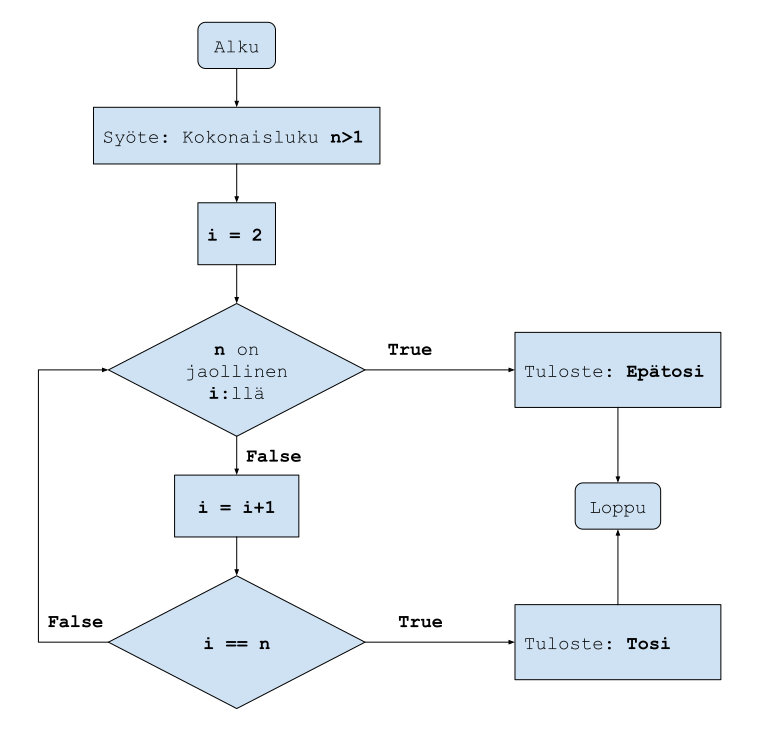

Tee tehtäviä.
Laadi vuokaavio algorimtille, jonka syöte on kaksi lukua $n,m$ ja tuloste näistä suurempi.
Tarkastellaan geometrista lukujonoa \(a_1=3, a_{n+1}=5\cdot a_n\) eli \(5, 15, 75, 375,...\). Piirrä vuokaavio algoritmille, joka selvittää kuinka mones jonon jäsen on suurempi kuin 1 000 000. Kuten esimerkeissä, kirjoita myös taulukko, jossa on muuttujien arvot kullakin toistolla.
Muuta edellisen kohdan vuokaaviotasi siten, että algoritmi selvittää kuinka monta jonon jäsentä on summattava yhteen, jotta summa on suurempi kuin 1 000 000. Kirjoita jälleen muuttujien arvot kullakin toistolla.
Tehtävä vuokaavio. Syöte: Vaillinaisen toisen asteen yhtälön \(ax^2+c=0\) kertoimet $a,c$. Tuloste: Yhtälön ratkaisu (tai tieto, että yhtälöllä ei ole ratkaisuja).
Tehtävä vuokaavio. Syöte: Kahden normaalimuodossa olevan suoran $ax+by+c=0$ ja $Ax+By+C=0$ kertoimet $a,b,c,A,B,C$. Tuloste: ”Kyllä”, jos suorat ovat kohtisuorassa toisiaan vastaan; ”Ei”, jos suorat eivät ole kohtisuorassa toisiaan vastaan.
Kirjoita, mitä arvoja muuttuja $i$ saa, kun syöte $n$ on 7 tai 55 ja mikä on näissä tapauksissa algoritmin tuloste? Mikä on algoritmin tarkoitus? Miten algoritmia voisi parantaa?
